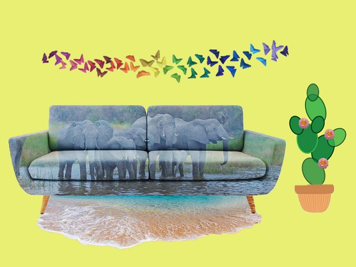

בקולאז' זה בחרתי להעביר את האהבה למשפחה, לים ושמש, לטבע וציוניות, יצירה ולצבעים.
השתמשתי בחיבור בין אלמנטים שונים תוך שילוב בחפצים שמעלים בי את "האהבות"
אותן בחרתי להעביר.
הספה מזכירה לי משפחה וכך גם הפילים
את הפרפרים גזרתי מ"גרפיטי קיפולי נייר" שיצרתי בעבר
ואת השאר משאירה לפרשנות שלכם 😊
לחץ על התמונה להגדלה
